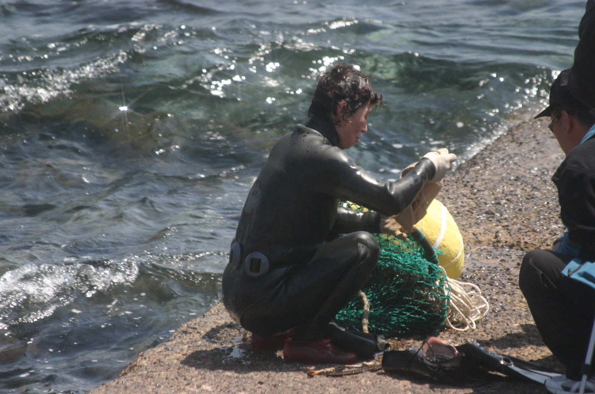

濟州海女怎麼一起工作，又讓新人加入？
每次下潛靠各自的身體，採集與傳授卻牽涉同伴、漁場規則和岸上的日常。想成為海女，學會潛水之後，還有哪些事要學？
在濟州島的海女照片裡，常看見穿著潛水衣的女性、浮在水面的浮具，以及裝漁獲的網袋。採集時，她們得親自下潛、辨認海裡的生物，再帶著漁獲上來。但一個行業如何存續，也仰賴照片外的環節：調教新人、決定採集海域、回到岸上後如何處理收穫。從這些面向看海女，比單看一個人的閉氣本領，更能理解這份職業。
一、各自下潛，仍要和同伴一起工作
海女以閉氣潛水採集海產，不使用水下供氣設備。她們需要熟悉海況、海底地形與可採集的生物，也需要判斷自己的能力。浮具稱為 tewak，連著存放漁獲的網袋；海女可扶靠浮具移動或休息，採到的東西則放進袋裡。
這些工具的使用技巧要實際動手掌握與傳授;知道哪裡有礁石、如何辨認海產，以及何時應該停下來，都得慢慢累積。濟州海女協會的介紹也把同伴互相留意危險、分享經驗，列為合作的重要理由。
資歷相同，精熟的領域也未必相同。海女依經驗與技能分為不同層級，較熟練的上軍海女會指導其他人。分級讓人知道可以向誰請教，也承認每個人適合的工作有所差別。一次潛得深不深，並不足以說明她能否長期從事這份工作。

二、共用一片漁場，需要哪些約定？
濟州沿海的漁業社群，對村落漁場有相應的使用權與管理規則。哪裡是邊界、誰有採集資格、用什麼方法，以及何時開放或停止採集，都會影響海女一天能做什麼。住在海邊、會潛水，和獲准在某片漁場工作，不能畫上等號。
這些規則也關係到明年還能採到什麼。限制採集期間或漁獲尺寸，便是把眼前的收入，投資於長期的永續漁場。海女博物館的展覽記錄，海女會討論共同問題與工作規則。共同使用並非任何人、任何時候都能採。
收入的安排也因工作而異，個別潛採海產，與海藻的集體採收、乾燥及販售會帶來不同報酬。海女雖然一同工作，但不一定每一袋漁獲都按人頭平均分配；合作的收益，得看她們負責的是哪一件事。
三、上岸之後，工作還沒結束
回到岸邊，海女還要整理、分揀漁獲，收好裝備，換下濕衣服。過去沿海有稱為 bulteok 的石圍空間，裡面生火，供她們更衣、取暖和休息。人們也在這裡談海況、交換技巧、討論村裡與工作有關的事。
2015 年的一項空間研究，以牛島的田野、十二位海女訪談與行為觀察，來進行分析。研究者看到，更衣、整理漁獲與教導新人，可以在同一處發生。所謂傳授，也包括一起做事時，請資深者示範怎麼穿裝備、辨認危險生物的機會。
後來的設施增加了淋浴、更衣與休息空間。對工作現場的人而言，有沒有熱水、能否避風雨、裝備放哪裡，都是左右每日身心狀態的重要因素。保存海女文化時，老石圍值得記錄，工作環境是否引進新設備也同樣值得注意。
四、共同工作，也要看誰承擔了什麼
下海採集之外，搬運、乾燥、儲放與販售也需要人做。博物館保存的照片和說明裡，可以看到家人在岸上協助搬運海藻。若只把海女的勞動等同於水下採集，便漏掉了在岸上這群人以及收穫變現的一連串過程。
海女之間的合作，也包含經驗不同的人如何相處。資深者能指出礁石與漁場的位置，新人則需要時間，把別人的說明變成自己的判斷。協會的介紹裡，上軍海女也擔任帶領社群的角色。經驗上的差別，因而同時關係到技術傳授與團體分工。
因此，理解一個社群，可以同時問：成員得到哪些協助，又要遵守哪些安排？有共同規則，才有辦法協調使用同一片海；規則如何形成、哪些人有機會加入討論，也會影響這種合作能否持續。
五、進了學校，怎麼再進入職業？
海女的技術曾大量經由家庭與地方社群傳授，現在也有學校提供訓練。學校讓想學的人有較清楚的起點，但完成課程，與在村落取得工作位置，中間仍有距離。
2024 年研究兩所海女學校的訪談研究，從入學、受訓到畢業後的進入過程，指出推薦、地方人際連結與社群接納等門檻。受訪的新海女也希望增加實作與實習。這份研究討論的，是課程之外如何真正開始工作。
另一方面，NHK 在 2025 年報導的 Ko Min-young，一邊擔任小學教師，一邊接受訓練，後來開始在村落當海女。報導記下的一次採集裡，她的收穫比資深者少，卻已為親手採到海產感到高興。這個個案讓人看見一條實際的進入路徑，也看見通過訓練後仍要累積的經驗。
六、希望有人接續，就要讓人能夠加入
濟州海女文化在 2016 年列入人類非物質文化遺產代表作名錄。被記錄、被看見，可以增加人們對這份工作的認識；一個人要不要把它當成職業，還得考慮收入、風險、訓練和地方關係。
老手希望有新人，新人也需要有人願意帶領。兩邊要碰得上，得有可持續的學習時間、實際工作的機會，以及清楚的加入條件。只要求年輕人珍惜傳統，還沒有回答他們如何生活、如何在團體裡找到位置。
海女的例子可以放回很多共同工作的場合：一個團體要保護累積的資源與經驗，也要思考怎麼讓還不熟悉的人逐步參與。當我們說希望某種本領繼續有人做，或許也該問問，自己願意花多少時間教，以及願意調整哪些原本只對老手方便的安排。
查證資料來源6 項
社群自述、田野研究與報導各有範圍；個案不作全島現況，學校研究只據已讀摘要。
- Culture of Jeju Haenyeo (women divers)，UNESCO，2016列名資料 ↗
支持內容：第一、二、六節：不使用水下供氣設備採集，依經驗技能分組，資深海女指導，家庭、學校與社群傳授；2016人類非物質文化遺產代表作名錄。不把深度、時長等介紹數字當人人標準或安全建議。
- Jeju Island Haenyeo，濟州海女協會 ↗
支持內容：第一至四節：浮具與網袋用途、技能分級、bulteok交流、村落漁業社群的漁場邊界、資格、採集方法與期間。協會自述與研究／館藏交叉核對；未採無風險、排清二氧化碳、只有韓日等較強概括。
- The Haenyeo Community，濟州海女博物館線上展覽 ↗
支持內容：第二至四節：討論規則、bulteok與更衣設施、採集限制；區分個別潛採與部分海藻集體採收乾燥販售；家人協助上岸搬運。不將全部收入寫成均分，不將歷史尺寸／季節表當2026法規。
- Spatial Transformation and Functions of Bulteok as Space for Haenyeo on Jeju Island, Korea，Byun等，2015 ↗
支持內容：第三節：核讀方法、結果與結論，研究2014牛島田野、12位海女訪談及行為觀察；更衣、取暖、分揀、交流、訓練與現代設施。限定個案，不把觀察等同全島現況或永遠無衝突。文中舊列名倡議已由2016正式列名更新。
- Is Sustainable Labor Force Reproduction of Jeju Haenyeo Possible?，Lee等，韓國地理學會誌，2024-12-31 ↗
支持內容：第五節：實讀出版頁英韓摘要，研究以相關人員深度訪談探討兩所學校；推薦、地方社交連結、實習與畢業後進入社群的門檻。僅據摘要，不稱讀完774–789頁全文，不把個案門檻當全島現行統一規定。
- South Korea’s female free-diving fishers fight to keep tradition alive，NHK WORLD-JAPAN，2025-11-03 ↗
支持內容：第五、六節：Ko Min-young邊任小學教師邊受訓、後在村落開始工作，資深者與新人的採集差異及招募需求。報導個案不當普遍入職保證；不採未重核2026人數、補貼金額或潛水測驗作練習指引。
延伸探討
把故事帶回自己的思考
想一個你熟悉的團體或工作場合：新人最難加入的是哪一步？如果由你安排，哪些規則需要保留，哪些可以改得更清楚，又有哪些教導工作值得大家一起分擔？